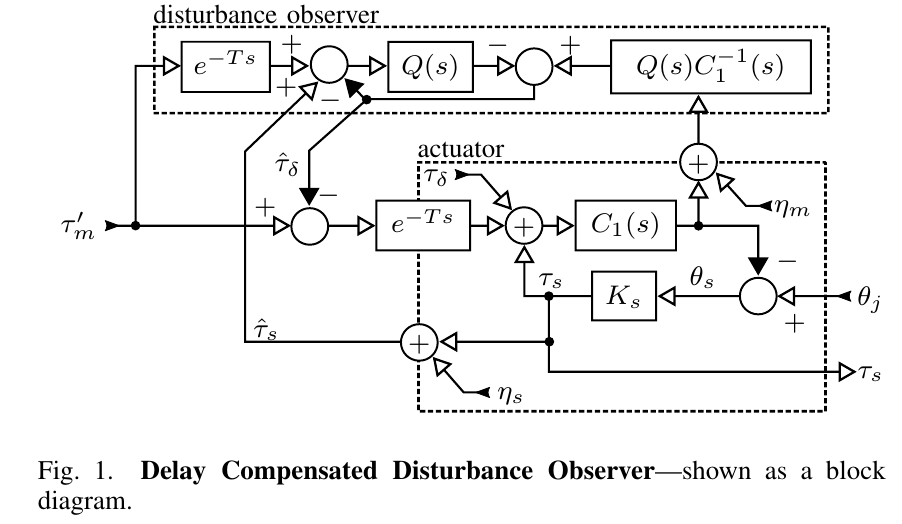

Adjustable-Stiffness Non-Linear Spring Testbed
Given the nature of our theory's claims, a proper validation experiment requires a testing apparatus that can track position/torque trajectories with adjustable, non-linear springs. Our approach extends the Open Source Leg's Selectable Series-Elasticity design, which mates an involute gear-shaft to a collection of spring disks. Each spring disk features an array of inward-pointing flexible beams that engage with the gear teeth to act as a (nearly linear) rotary spring. The amount of series elasticity can be selected by adding or removing spring disks. Our extension aims to re-design the spring disks to allow selection of non-linear spring behaviors. This is based on two competing effects: when a beam rolls up on the tip of a tooth, the contact force vector tilts towards the radial direction---producing a softening-type nonlinearity; when a beam is initially disengaged from a tooth, the angle where the beam first engages with the tooth marks an abrupt increase in stiffness---a stiffening-type nonlinearity.
Spring Design for Disturbance-Observer Feedback
Our spring design framework also extends to springs that serve a torque-measurement purpose in a feedback controller designed to hide the effects of transmission friction in prosthetic legs. This transmission friction is problematic because it prevents a person wearing the powered prosthetic leg from swinging the leg forward under natural pendulum dynamics as they typically do with a passive prosthesis. But thanks to the spring's ability to measure the output torque, we can use a disturbance estimator---a specialized type of linear feedback controller---to measure and directly compensate for the nonlinear friction effects in the transmission. The performance we can expect using this strategy ties back to the design of the spring profile because the measurement noise in the deflection sensing is related to torque noise by the marginal spring rate at any particular deflection. Using our optimization methods, we can design springs that optimally trade off the goals of disturbance rejection and energy savings while guarnteeing robust satisfaction of constraints over a range of activities of daily living. In particular, we hope to exploit stiffening nonlinearity in the spring to attain high torque fidelity at low torques while still satisfying absolute deflection limits at high torques and remaining close to the energy-optimal performance.